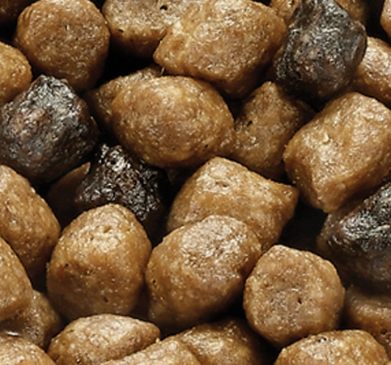
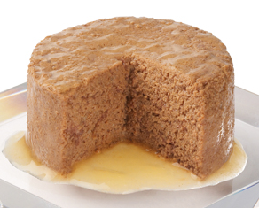
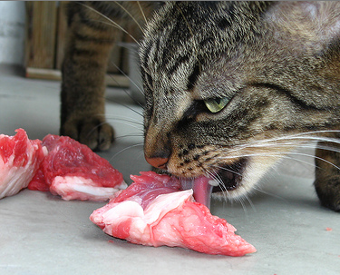

Many people find dry kibble to be more convenient, and many vets feel that dry food is better for a cat’s teeth. However, dry food is not a substitute for dental care and pretty much all cats may need professional dental care at some point.

Many cats seem to find wet food more palatable and this can be especially important if you have a cat with a finicky appetite. Canned food also has a much higher water content, and this can be of particular benefit for cats with kidney problems.

Feeding a raw diet closely mirrors what cats would naturally eat in the wild and provides a broad range of benefits that include healthy skin and coat, clean teeth, decreased litter box odor, natural weight control, and increased energy.